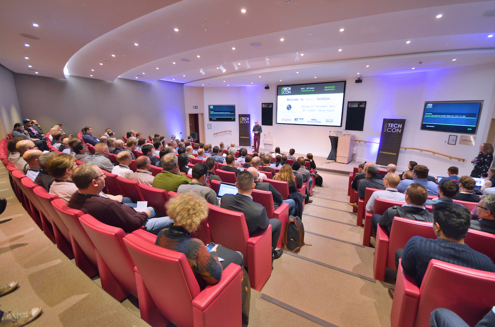

History
TECHCON is an annual conference that began as a way for professionals, innovators, and tech enthusiasts to come together to explore emerging technologies, network, and learn from experts in the field. Over the years, it has grown into a highly anticipated event, attracting top companies, entrepreneurs, developers, and thought leaders from around the world. Each edition of TechCon typically focuses on the latest trends in technology, including artificial intelligence, cybersecurity, software development, hardware innovations, and more. With each passing year, the conference has adapted to new advancements and areas of interest in the tech community.
